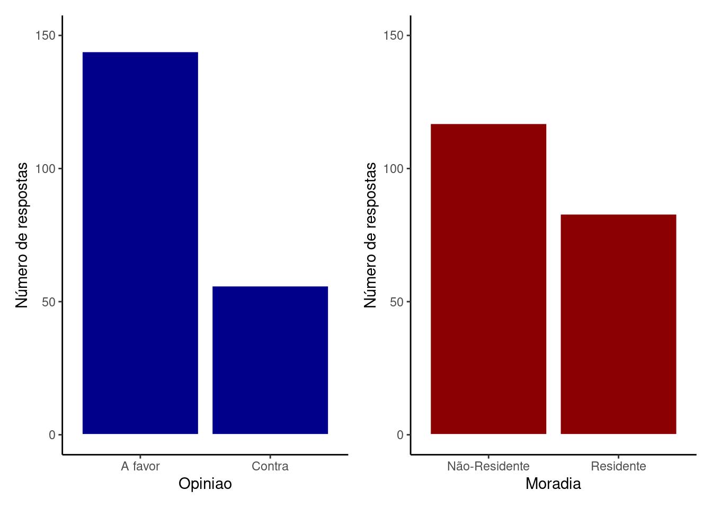

Capítulo 9 Análise bidimensional: variáveis qualitativas
Até agora exploramos formas de representar visualmente uma única variável por vez (Capítulos 3 e 4) e discutimos medidas para descrever algumas propriedades desta variável (Capítulo 5 a 8). A partir de agora veremos como representar e resumir padrões de associação entre pares de variáveis. Segundo a natureza dos dados envolvidos, estas associações podem ser entre:
duas variáveis qualitativas (este capítulo);
duas variáveis quantitativas (Capítulo 10) e;
uma variável qualitativa e uma quantitativa (Capítulo 11)
Exemplo
Imagine que haverá uma obra de revitalização de uma área na região central da cidade. A obra implicará na melhoria de acesso e segurança, ferta de serviços, mas levará tempo para ser concluída e precisará passar por ações de remoção de moradias irregulares, interdição de ruas e avenidas por longos períodos, etc. A prefeitura encomenda uma pesquisa para saber a opinião dos munícipes. A cada entrevistado são feitas duas perguntas:
- Qual sua opinião sobre a necessidade de realização da obra?
- A favor
- Contra
- Você reside na região diretamente afetada:
- Residente
- Não-Residente
A base de dados está disponível em: Entrevista_municipes.csv
Importe a tabela e veja os primeiros 12 resultados das entrevistas:
# Carrega pacotes
library(tidyverse)
# Importa base de dados
mun = read_delim('Entrevista_municipes.csv',
delim = ',')
n = nrow(mun) # Número de entrevistados| Entrevistado | Opiniao | Moradia |
|---|---|---|
| 1 | A favor | Residente |
| 2 | A favor | Residente |
| 3 | A favor | Residente |
| 4 | A favor | Residente |
| 5 | Contra | Não-Residente |
| 6 | Contra | Residente |
| 7 | A favor | Não-Residente |
| 8 | Contra | Não-Residente |
| 9 | A favor | Não-Residente |
| 10 | A favor | Não-Residente |
| 11 | A favor | Residente |
| 12 | A favor | Não-Residente |
Após entrevistar \(200\) pessoas selecionadas ao acaso de uma lista da moradores da cidade, é construída uma tabela com três colunas: Entrevistado (sequência numérica do primeiro ao último respondente), Opinião e Moradia.
Estão descritos acima os resultados das primeiras 12 entrevistas, onde é possível ver ao menos uma combinação de todas as possíveis respostas. O entrevistado pode ser: i) A favor e ser Residente da região; ii) A favor e ser Não-Residente, iii) Contra e ser Residente; iv) Contra e ser Não-Residente.
Vamos inicialmente representar cada uma das variáveis individualmente por meio de uma tabela de frequência dos 200 entrevistados.
resumo_opiniao = mun %>%
group_by(Opiniao) %>%
summarise(Op_n = n()) %>%
mutate(Op_rel = Op_n/sum(Op_n))
resumo_opiniao| Opiniao | Op_n | Op_rel |
|---|---|---|
| A favor | 144 | 0.72 |
| Contra | 56 | 0.28 |
Das \(200\) respostas tivemos \(144\) pessoas A favor (\(72\%\)) e \(56\) pessoas Contra (\(28\%\)).
Com relação ao local de residência:
resumo_morad = mun %>%
group_by(Moradia) %>%
summarise(Morad_n = n()) %>%
mutate(Morad_rel = Morad_n/sum(Morad_n))
resumo_morad| Moradia | Morad_n | Morad_rel |
|---|---|---|
| Não-Residente | 117 | 0.585 |
| Residente | 83 | 0.415 |
Temos um total de \(117\) pessoas Não-Residente (\(58.5\%\)) e \(83\) pessoas Residente (\(41.5\%\))
Se visualizarmos estes totais em gráficos de barras individuais teremos:
plt_op = ggplot(mun, aes(x = Opiniao)) +
geom_bar(fill = 'darkblue', color = 'white') +
coord_cartesian(ylim = c(0, 150)) +
labs(y = 'Número de respostas') +
theme_classic()
plt_morad = ggplot(mun, aes(x = Moradia)) +
geom_bar(fill = 'darkred', color = 'white') +
coord_cartesian(ylim = c(0, 150)) +
labs(y = 'Número de respostas') +
theme_classic()
# Obs: para que a linha abaixo funcione, é necessário habilitar o pacote 'patchwork'.
# Caso não tenha, instale e carregue com os comandos:
# install.packages('patchwork')
# library(patchwork)
plt_op + plt_morad
Existe portanto um predomínio de pessoas A Favor e um ligeiro predomínio de entrevistados Não-Residentes.
Estamos interessados em entender se existe alguma associação entre as respostas dadas às duas perguntas, uma questão que pode ser colocada da seguinte forma:
Será que moradores
Residentestendem ter uma opinião consistentemente diferente de moradoresNão-residentesno que se refere a serA favorouContraa obra?
Para começar a entender esta questão vamos explorar a distribuição das variáveis conjuntamente.
9.1 Tabelas de contingência
Tabelas de contigência são organizadas para verificarmos a associação entre duas variáveis qualitativas. São conhecidas também como tabelas de dupla entrada. Nas colunas estão os níveis da variável \(X\) e nas linhas os níveis da variável \(Y\).
Para nosso exemplo, podemos fazer simplesmente:
tcont = table(mun$Opiniao, mun$Moradia)
tcont##
## Não-Residente Residente
## A favor 81 63
## Contra 36 20Temos portanto:
81 - A favor e Não-Residente;
63 - A favor e Residente;
36 - Contra e Não-Residente;
20 - Contra e Residente
Podemos ver os totais marginais das linhas:
tcont_linhas = apply(tcont, 1, sum) # Totais das linhas
tcont_linhas## A favor Contra
## 144 56Ou os totais marginais das colunas:
tcont_colunas = apply(tcont, 2, sum) # Totais das colunas
tcont_colunas## Não-Residente Residente
## 117 83Que são justamente os totais que verificamos nas distribuições individuais.
Se quisermos ver as frequências relativas marginais podemos fazer:
trel_linha = prop.table(tcont, 1) # Frequencia relativa marginal das linhas
trel_linha##
## Não-Residente Residente
## A favor 0.5625000 0.4375000
## Contra 0.6428571 0.3571429Neste caso, estamos vendo as frequências relativas das linhas, isto é, cada linha nesta tabela soma \(1\). O que vemos nesta tabela é:
dos \(144\) entrevistados que são A favor, cerca de \(56.25\%\) são Não-Residente, enquanto os demais \(43.75\%\) são Residente
dos \(56\) entrevistados que são Contra, cerca de \(64.29\%\) são Não-Residente, enquanto os demais \(35.71\%\) são Residente
Podemos fazer exatamente a mesma coisa olhando agora para as frequências marginais por colunas:
trel_coluna = prop.table(tcont, 2) # Frequencia relativa marginal das colunas
trel_coluna##
## Não-Residente Residente
## A favor 0.6923077 0.7590361
## Contra 0.3076923 0.2409639Neste caso são as colunas que somam \(1\), portanto:
dos \(117\) entrevistados que são Não-Residente, cerca de \(69.23\%\) são A favor, enquanto os demais \(30.77\%\) são Contra
dos \(83\) entrevistados que são Residente, cerca de \(75.9\%\) são A favor, enquanto os demais \(75.9\%\) são Contra
Podemos finalmente ver a frequência relativa conjunta:
trel_conjunta = prop.table(tcont) # Frequencia relativa conjunta
trel_conjunta##
## Não-Residente Residente
## A favor 0.405 0.315
## Contra 0.180 0.100Neste caso, o somatório das linhas é igual a:
tcont_linhas / sum(tcont_linhas)## A favor Contra
## 0.72 0.28E indica os valores relativos das opiniões A Favor e Contra.
O somatório das colunas é igual a:
tcont_colunas / sum(tcont_colunas)## Não-Residente Residente
## 0.585 0.415E indica os valores relativos de Não-Residentes e Residentes.
Na tabela de frequência relativa conjunta, o somatório total da tabela deve ser igual a \(1\).
9.2 O gráfico de barras para duas variáveis qualitativas
Existem várias formas de gerar um gráfico de barras combinando as duas variáveis. Se quisermos utilizar a própria tabela de contingência obtida a partir do comando table(mun$Opiniao, mun$Moradia), podemos utilizar o comando barplot(). Por outro lado, se quisermos utilizar a tabela original de dados (objeto mun) podemos fazer uso do pacote ggplot2:
plt_bar1 = ggplot(mun) +
aes(x = Moradia, fill = Opiniao) +
geom_bar(color = 'white', position = 'dodge') +
scale_fill_manual(values = c('Contra' = 'darkred',
'A favor' = 'darkblue')) +
coord_cartesian(ylim = c(0, 80)) +
labs(y = 'Número de respostas') +
theme_classic()
plt_bar1
Veja que nesta figura, existem mais opiniões A favor independente do entrevistado ser ou não residente. Este padrão é o mesmo que observamos no gráfico da variável Opinião isoladamente. Isto sugere que não existe associação entre as variáveis Opinião e Moradia. Isto é, a opinião de um entrevistado sobre a construção da obra não depende do seu local de moradia.
Exemplos de associações entre duas variáveis
Abaixo são apresentadas situações em que existe uma associação.

Em todos estes exemplos, note que a relação entre as opiniões A favor ou Contra depende se o entrevistado é ou não Residente na região. Todos estes padrões configuram uma associação entre as variáveis Opinião e Moradia.
Figura A: Não-Residentes tendem a ser
A favore Residentes são em sua maioriaContra;Figura B: Todos tendem a ser
Contra, mas a diferença de opiniões é maior entre os Residentes;Figura C: Não-Residentes tendem a ser
Contra, enquanto não parece haver diferenças entre os Residentes;Figura D: Residentes tendem a ser
A favor, enquanto não parece haver diferenças entre os Residentes;
9.3 Medindo a discrepância com o índice de \(\chi^2\) de Pearson
O índice de qui-quadrado (\(\chi^2\)) mede a discrepância entre os valores observados e os valores esperados em uma tabela de contingência.
Digamos que um município tenha \(20\%\) de sua população morando em área Rural e os outros \(80\%\) em área Urbana. Se fizermos uma amostragem ao acaso dos moradores é esperado que esta frequência relativa se reflita na amostra. Neste caso se sorteamos \(200\) pessoas, seria esperado:
Zona Rural: \(40\) moradores
Zona Urbana \(160\) moradores
| Moradia | Freq |
|---|---|
| Rural | 40 |
| Urbana | 160 |
Entretando, se fazemos um sorteio ao acaso, haverá alguma variação ao redor destes valores. O \(\chi^2\) mede esta discrepância entre as frequências observadas (\(o\)) e esperadas (\(e\)) para cada célula da tabela:
\[\chi^2 = \sum_{i=1}^{n}\frac{(o_i - e_i)^2}{e_i}\] Para uma tabela de frequências, devemos determinar portanto os valores de \(o_i\) e \(e_i\).
Suponha que uma amostra de \(200\) moradores tenha resultado em:
| Moradia_obs | Freq |
|---|---|
| Rural | 31 |
| Urbana | 169 |
As frequências observadas e esperadas serão:
- Zona Rural:
\(o_{Rural} = 31\)
\(e_{Rural} = 0.2 \times 200 = 40\)
- Zona Urbana
\(o_{Urbana} = 169\)
\(e_{Urbana} = 0.8 \times 200 = 160\)
De modo que o valor de \(\chi^2\) será:
\(\chi^2 = \frac{(31 - 40)^2}{40} + \frac{(169 - 160)^2}{160} = \frac{(-9)^2}{40} + \frac{(9)^2}{160} = 2.025 + 0.50625 = 2.53125\)
9.4 O índice de \(\chi^2\) em uma tabela de contigência
No exemplo acima, as contagens esperadas foram definidas a partir de um modelo que dizia que as populações rurais e urbanas se dividiam nas proporções \(20\%:80\%\). Em uma tabela de contigência, a hipótese em verificação é a de que não há associação entre \(X\) e \(Y\). Se for assim, é esperado que as frequências conjuntas sejam porporcionais às frequências marginais*. Vamos apresentar esta ideia utilizando uma notação geral para tabelas de contingência e em seguida discutir com um exemplo.
A tabela abaixo apresenta \(r\) linhas por \(s\) colunas com as contagens de todas as combinações dos níveis da variável \(X\) (Níveis \(A_{1}\) a \(A_{r}\)) e da variável \(Y\) (Níveis \(B_{1}\) a \(B_{s}\)). Os totais marginais de \(X\) e \(Y\) são expressos respectivamente na última coluna e na última linha.
| X ⟍ Y | \(B_{1}\) | \(B_{2}\) | \(\cdots\) | \(B_{j}\) | \(\cdots\) | \(B_{s}\) | Totais em \(X\) |
|---|---|---|---|---|---|---|---|
| \(A_{1}\) | \(n_{11}\) | \(n_{12}\) | \(\cdots\) | \(n_{1j}\) | \(\cdots\) | \(n_{1s}\) | \(n_{1.}\) |
| \(A_{2}\) | \(n_{21}\) | \(n_{22}\) | \(\cdots\) | \(n_{2j}\) | \(\cdots\) | \(n_{2s}\) | \(n_{2.}\) |
| \(\vdots\) | \(\vdots\) | \(\vdots\) | \(\vdots\) | \(\vdots\) | \(\vdots\) | \(\vdots\) | \(\vdots\) |
| \(A_{i}\) | \(n_{i1}\) | \(n_{i2}\) | \(\cdots\) | \(n_{ij}\) | \(\cdots\) | \(n_{is}\) | \(n_{i.}\) |
| \(\vdots\) | \(\vdots\) | \(\vdots\) | \(\vdots\) | \(\cdots\) | \(\cdots\) | \(\vdots\) | \(\vdots\) |
| \(A_{r}\) | \(n_{r1}\) | \(n_{r2}\) | \(\cdots\) | \(n_{rj}\) | \(\cdots\) | \(n_{rs}\) | \(n_{r.}\) |
| Totais em \(Y\) | \(n_{.1}\) | \(n_{.2}\) | \(\cdots\) | \(n_{.j}\) | \(\cdots\) | \(n_{rs}\) | \(n\) |
Sob a hipótese de não associação entre \(X\) e \(Y\) teremos que:
\(\frac{n_{i1}}{n_{.1}} = \frac{n_{i2}}{n_{.2}} = \cdots = \frac{n_{is}}{n_{.s}} = \frac{n_{i.}}{n}\)
e assim:
\(\frac{n_{ij}}{n_{.j}} = \frac{n_{i.}}{n}\)
Deste modo:
\(n_{ij}^{e} = \frac{n_{i.} \times n_{.j}}{n}\)
A notação \(n_{ij}^{e}\) está sendo utilizada para denotar que a expressão acima determina a contagem de cada célula da tabela sob a hipótese de não associação e portanto, se refere ao valor esperado de \(n_{ij}\).
Tendo definido os valores esperados em uma tabela de contingência de \(r \times s\), o \(\chi^2\) é dado por:
\[\chi^2 = \sum_{i=1}^{r}\sum_{j=1}^{s}\frac{(n_{ij} - n_{ij}^{e})^2}{n_{ij}^{e}}\]
Retornando ao exemplo das entrevistas
A tabela de contingência contendo os dados observados do início do capítulo pode ser escrita como:
| Não-Residente | Residente | Total Opinião | |
|---|---|---|---|
| A favor | 81 | 63 | 144 |
| Contra | 36 | 20 | 56 |
| Total Moradia | 117 | 83 | 200 |
Os Valores esperados na linha \(i\) e coluna \(j\) são:
- Linha \(1\) - Coluna \(1\) (
Não-Residente-A favor):
\(n_{ii}^{e} = \frac{n_{1.} \times n_{.1}}{n} = \frac{144 \times 117}{200} = 84.24\)
- Linha \(1\) - Coluna \(2\) (
Residente-A favor):
\(n_{ii}^{e} = \frac{n_{1.} \times n_{.2}}{n} = \frac{144 \times 83}{200} = 59.76\)
- Linha \(2\) - Coluna \(1\) (
Não-Residente-Contra):
\(n_{ii}^{e} = \frac{n_{2.} \times n_{.1}}{n} = \frac{56 \times 117}{200} = 32.76\)
- Linha \(2\) - Coluna \(2\) (
Residente-Contra):
\(n_{ii}^{e} = \frac{n_{2.} \times n_{.2}}{n} = \frac{56 \times 83}{200} = 23.24\)
De modo que a tabela com os valores esperados será:
| Não-Residente | Residente | Total Opinião | |
|---|---|---|---|
| A favor | 84.24 | 59.76 | 144 |
| Contra | 32.76 | 23.24 | 56 |
| Total Moradia | 117 | 83 | 200 |
Finalmente, o valor \(\chi^2\) pode ser obtido por:
\(\chi^2 = \frac{(81 - 84.24)^2}{84.24} + \frac{(36 - 32.76)^2}{84.24} + \frac{(63 - 59.76)^2}{84.24} + \frac{(20 - 23.24)^2}{84.24} = 1.072\)
9.5 Valores de \(\chi^2\) quando existe associação
O valor de \(\chi^2\) será zero somente se os valores observados forem exatamente igauis aos valores esperados. Pequenas discrepâncias irão gerar valores de \(\chi^2\) acima de zero. Os valores se tornarão mais altos à medida que aumentam as diferenças entre \(n_{ij}\) e \(n_{ij}^e\).
Abaixo estão diferentes exemplos em que existe associação entre Opinião e Moradia. Compare os valores e os gráficos abaixo os que fizemos no exemplo do capítulo e veja que todos os valores de \(\chi^2\) são mais elevados.

- Tente aplicar a fórmula do \(\chi^2\) para chegar aos resultados apresentados em cada exemplo.
9.6 Variações do índice de \(\chi^2\)
O valor de \(\chi^2\) aumenta com o tamanho da amostra, o que torna difícil comparações entre diferentes estudos. Para corrigir este efeito existe o coeficiente de contigência de Pearson (\(C\)) que é baseado no resultado de \(\chi^2\)
\[C = \sqrt{\frac{\chi^2}{\chi^2 + n}}\]
em que \(n\) é o tamanho da amostra. O valor máximo de \(C\) depende do número de linhas (\(r\)) e de colunas (\(s\)) na tabela de contingêcia, deste modo podemos ainda definir um outro coeficiente que varia entre \(0\) e \(1\):
\[T = \sqrt{\frac{\frac{\chi^2}{n}}{(r-1) \times (s-1)}}\] O valor \(T = 0\) ocorre quando não há associação (\(\chi^2 = 0\)) e o valor máximo de \(T = 1\) só será atingido quando houver associação e \(r = s\)
Todos estes índices aumentam conforme aumenta o grau de associação entre as variáveis. Entretanto, não dissemos em que ponto passamos a aceitar a hipótese de associação as variáveis \(X\) e \(Y\). Iremos tratar deste assunto na seção sobre estatística inferencial. Ao tratarmos deste ponto é importante termos claro o que siginifica uma associação (ou dependêcia) entre duas variáveis qualitativas e como o índice de \(\chi^2\) mede esta associação.
9.7 Obtendo o índice de \(\chi^2\) de uma tabela de dados
A função para o cálculo do \(\chi^2\) no R é chisq.test e pode ser utilizada a partir da tabela de contigência gerada pela função table:
tcont = table(mun$Opiniao, mun$Moradia)
chisq.test(tcont)##
## Pearson's Chi-squared test with Yates' continuity correction
##
## data: tcont
## X-squared = 0.76697, df = 1, p-value = 0.3812O resultado mostra o o valor de \(\chi^2\) calculado (X-squared) e outras duas quantias denominadas de graus de liberdade (df) e valor de p (p-value), sobre as quais falaremos na seção sobre Inferência estatística (Capítulos 12 a 18).
Note que o resultado é diferente do que obtivemos neste capítulo. Isto ocorre pois, por padrão, a função utiliza a correção de Yates (veja aqui), em que \(\chi_{Yates}^{2}\) é calculado por:
\[\chi_{Yates}^{2} = \sum_{i=1}^{r}\sum_{j=1}^{s}\frac{(|n_{ij} - n_{ij}^{e}| - 0,5)^2}{n_{ij}^{e}}\]
O termo \(|n_{ij} - n_{ij}^{e}|\) se refere ao módulo da distância entre os valores observados e calculados.
Esta correção será abordada ao falarmos de testes de hipóteses para variáveis categóricas. Por hora, se quisermos obter exatamente os resultados descritos no exemplo deste capítulo, basta fazermos:
chisq.test(tcont, correct = FALSE)##
## Pearson's Chi-squared test
##
## data: tcont
## X-squared = 1.0724, df = 1, p-value = 0.3004